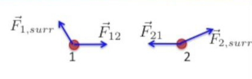
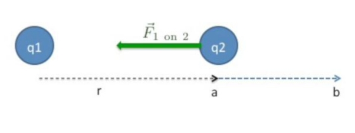
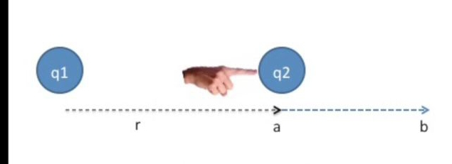
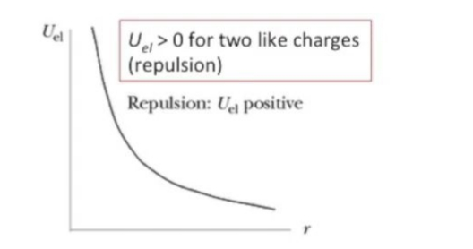
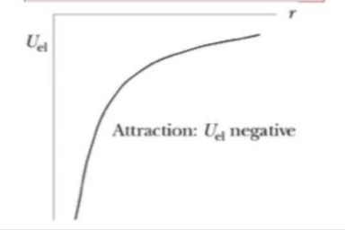
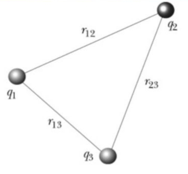
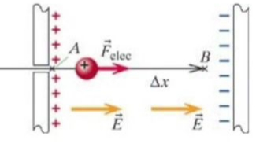
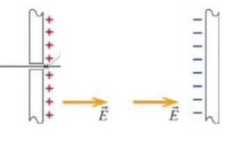

Bugünkü derse potansiyel enerji konusunun bir kez daha üzerinden geçerek başlayacağız, ardından elektriksel potansiyel, sonra iki yükün ortaya çıkarttığı potansiyel konusu. İkiden fazla yük potansiyeli de işlenecek.
Tek parçacığın (particle) enerjisi neydi? Bu dersin önkoşul dersi olan giriş dersini alanlar formülü görmüştür, mekanik konuları orada işlenmişti, tek parçacık enerjisi
\[ E_{particle} = \frac{mc^2}{\sqrt{1-\frac{v^2}{c^2}}} = mc^2 + K \approx \underbrace{mc^2}_{\textrm{duragan enerji}} +\underbrace{\frac{1}{2}mv^2}_{\textrm{kinetik enerji}} \]
Eşitliğin ilk bölümünde \(mc^2\)’yi o büyük formülle bölüyoruz, ki ona Lorenz faktörü deniyor (\(\gamma\) ile gosterilir).
Not: [3] yazısında izafi mekanikteki kinetik enerji tanımında \(E_k = (\gamma - 1)mc^2\) ifadesine erişilmişti, üstteki
\[ E_{particle} = K = \frac{mc^2}{\sqrt{1-\frac{v^2}{c^2}}} -mc^2 \]
olarak gösterilince bu izafi tanımla aynıdır.
Devam edelim, iki üstte eşitliğin en sağındaki toplamda iki terim var, bu terimlerden ilki durağan haldeki enerji. Nesnenin durduğu haliyle bile bir enerjisi var, ona eklenen her enerji hareketlilikten ortaya çıkıyor, ki bu da ikinci terimde, ona \(K\) dedik. Bu arada büyük bir ihtimalle kinetik enerji size daha önce salt bu ikinci terim ile anlatıldı. Fakat bu formül (2. terim) aslında bir yaklaşıksal temsil. Eğer parçacık ışık hızına oranla yavaş hareket ediyorsa çok iyi işe yarıyor.
Şimdi enerji prensibini hatırlayalım. Hatırlarsak bu dersin önkoşul dersinde iki ana prensip vardı. 1) Enerji [evrende] muhafaza edilir 2) nesnenin momentumu muhafaza edilir. Bir nesnenin enerjisini arttırmak istiyorsam o nesne üzerinde iş yaparım.
Yapılan iş \(W\) şu şekilde gösterilir,
\[ \Delta E_{particle} = W = \int \vec{F} \cdot \mathrm{d} \vec{r} \]
Bu süreç sırasında tabii parçacığın kütlesinin değişmediğini farz ediyoruz, ki bu sağlam bir faraziye. O zaman enerjideki tek değişim kinetik enerjiyle alakalı olur, yani
\[ \Delta E_{particle} = \Delta K = W \]
Eğer bir parçacık üzerinde iş yaparsam, onu hızlandırabilirim, onun kinetik enerjisini arttırabilirim.
Şimdi iş hesabının nasıl yapıldığını hatırlatmak için bir örnek; bir ip üzerinde boncuk var, ip 10 metre, boncuğa sabit olarak 10 Newton uyguluyoruz. İp yatay. Bu durumda sabit kuvveti entegral dışına alıp sadece baştan sona olan yer değişimine bakabiliriz, ki bu 10 m, 10 N çarpı 10m = 100 Joule.
Şimdi tek parçacıklıdan çok parçacıklı duruma geçelim. Burada potansiyel enerjiyi elektrik sistemler bağlamında tanımlamak gerekiyor. Potansiyel enerji için birden fazla öğe gerekir, çünkü potansiyel enerji bir ’etkileşim enerjisi’dir, iki veya daha fazla öğenin etkileşiminden ortaya çıkar. Bu durumda birden fazla parçacığın enerji prensibini bulmak gerekir.
Bir sistem tanımlayalım, içinde iki parçacık olsun, parçacık 1 ve 2. Kuvvetleri 1, 2, ve ‘çevreden (surroundings)’ gelen kuvvetler diye ayıracağız, yani sistem dışından olan her şey ‘çevre’ altında sınıflanacak. Yani parçacık 1 üzerinde parçacık 2 ve çevre etki ediyor olacak.

O zaman parçacık 1 üzerinde yapılan iş
\[ \Delta E_1 = W_{\textrm{\textrm{parçacık 1 üzerinde}}} = \int \vec{F}_{1,surr} \cdot \mathrm{d} \vec{r} + \int \vec{F}_{12} \cdot \mathrm{d} \vec{r} \]
\[ = W_{1, surr} + W_{1,2} \]
Parçacık için benzer formül,
\[ \Delta E_2 = W_{\textrm{\textrm{parçacık 2 üzerinde}}} = \int \vec{F}_{2,surr} \cdot \mathrm{d} \vec{r} + \int \vec{F}_{21} \cdot \mathrm{d} \vec{r} \]
\[ = W_{2, surr} + W_{2,1} \]
Şimdi herşeyi biraraya koyalım; bu sistemin toplam enerji prensibini bulmak için, enerjideki toplam değişime bakıyoruz, bu değişim iki parçacık sisteminde çevre ile parçacıkların birbiri üzerinde yaptıkları işin toplamı,
\[ \Delta (E_1 + E_2) = (W_{1, surr} + W_{2, surr}) + (W_{1,2} + W_{2,1}) \]
Şimdi toplam enerji değişimi için her iki enerji değişimini topluyoruz,
\[ \Delta (E_1 + E_2) = W_{surr} + W_{internal} \]
ki \(W_{surr} = W_{1, surr} + W_{2, surr}\) ve \(W_{internal}=W_{1,2}+W_{2,1}\). Burada \(W_{internal}\) sistemin içinde yaptığı / olan iş, \(W_{surr}\) ise çevrenin sistem üzerinde yaptığı iş.
Tek parça sistemini hatırlarsak o formül parçacık enerjisindeki değişim onun üzerinde çevrenin yaptığı iştir diyordu, çünkü o durumda iş yapacak ikinci bir parçacık yoktu. Ben üstteki formülü tek parçacık durumuna benzetmek istiyorum. \(\Delta K\) ekleyelim,
\[ \Delta (E_1 + E_2) = \Delta K = W_{surr} + W_{internal} \qquad (1) \]
Soru
İki parçacık birbirini eşit şekilde çekiyor, birbirlerini iptal ederler, hiç hareket olmaz, o zaman yapılan iş sıfır olmaz mı?
[Verilen cevaba göre şu söylenebilir, normal şartlarda böyle olurdu [1], fakat çevre etkisi de var, onun etkisiyle her iki parçacık hareket ediyor olabilirler, bu yollarını az da olsa değiştirebilir, yani hareket ve iki parçacığın birbirine uyguladığı kuvvet tam birbirini iptal ediyor denemez cunku birbirlerine tam karsit halde durmazlar].
Şimdi formülü çevrenin yaptığı ise göre tekrar düzenleyelim. İki parçacığı tek bir ünite olarak görelim, ki bu sistemimiz, ve bu sisteme dışarıdan gelen enerji, onun üzerinde yapılan işi bulmaya uğraşalım.
Bir tanım yapacağım; çevrenin yaptığı işi sistemin kinetik enerjisindeki değişim ve bizim şimdi potansiyel enerji diye adlandıracağımız bir şeydeki değişimin toplamı olarak tanımlayacağım. Potansiyel enerjinin dersimizde ilk ortaya çıktığı her burası.
\[ \Delta U + \Delta K = W_{surr} \]
Bu denklemi (1) ile karşılaştıralım,
\[ \Delta (E_1 + E_2) = \Delta K = W_{surr} + W_{internal} \]
Bu iki denklemi kullanarak \(W_{surr}\) için çözersek,
\[ \Delta U = -W_{internal} \]
olacağını görürüz. Yani sistemin kendi içinde yaptığı işin negatif değerli hali potansiyel enerjideki değişim oluyor. Demek ki bir sistemin kendi içinde yaptığı iş, o sistemdeki parçacıkların birbiri üzerinde yaptığı iş potansiyel enerjide değişime yol açıyor. Bu sistemde enerji değişimine yol açıyor. Mesela örnek olarak arasında yay olan iki top sistemimiz diyelim,
sistemin kendi içinde yaptığı iş sonucunda toplar iki yana doğru daha açılmış olsun, o zaman potansiyel enerji artıyor [doğru, yaylar daha gergin hale geliyor]. Potansiyel enerji olduğunu biliyoruz çünkü toplardan birini bıraksam [diğer top ötekine doğru havada gidiyor].
Burada anlaşılması gereken önemli nokta potansiyel enerjinin etkileşim enerjisi olduğu, yani parçacıkların arasındaki etkileşimden ortaya çıkan bir enerji bu. Tek bir parçacığın hiçbir potansiyel enerjisi yoktur çünkü yakınında etkileşimde olabileceği başka parçacık yoktur.
Bir sistemdeki potansiyel enerjinin ne olduğunu bir sistemin büyümesi sırasında etkileşimlerin nasıl değiştiğine bakarak bulabiliriz. Örnek için elektrik yüklerine dönelim, iki yük olsun elimizde, \(q_1,q_2\). Diyelim ki bu yüklerden \(q_1\)’i sabit tutacağız, \(q_2\)’yi hareket ettireceğiz, onun üzerinde iş yapacağız. Bu işin iki yük arasındaki belli bir kuvveti yenerek onu yapması gerekir, bu kuvvet standart Coloumb kanunundan bilinen kuvvet,

Dışarıdan / cevreden yapılan işi bir elle temsil edelim, bu el \(q_2\)’yi \(a\)’dan \(b\)’ye doğru itecek.

Bu sırada sistem üzerinde iş yapmış olacağım ve sistemın potansiyel enerjisini değiştirmiş olacağım.
\[ W = \int_{a}^{b} \vec{F} \cdot \mathrm{d} \vec{x} = -\int_{a}^{b} \frac{q_1 q_2}{4 \pi \epsilon_0 r^2} \hat{r} \cdot \mathrm{d} \vec{r} \]
\[ = \left[ \frac{q_1 q_2}{4 \pi \epsilon_0} \frac{1}{r} \right]_{a}^{b} \]
\[ = \frac{q_1 q_2}{4 \pi \epsilon_0} (\frac{1}{b} - \frac{1}{a}) \]
Üç üstteki formülde eksi işareti nereden geldi (ve sonra niye kayboldu)? İlk eksi işareti yüklerin birbirini çekiş kuvvetine ters yönde bir iş yaptığımız için eklendi. Daha sonra entegral alırken bölende olan \(r^2\)’nin entegrali alındığı sırada bir eksi daha ortaya çıkar ve mevcut eksiyi artı yapar.
İşaretleri bu şekilde kontrol etmek önemli. Tabii sonra elde edilen sonuca bakıp kabaca akla yatkın olup olmadığına da bakmak iyidir. Çekim kuvvetine ters iş yapıyorum, eksi, bunun sonucu potansiyel enerjiyi arttırıyor olmalı, artı.
Peki enerji nereye gitti? Sistemi öyle ayarlayacağım ki başlangıçta ve bitişte hız sıfır olacak, yani \(V_i=V_f=0\), ve kinetik enerjide değişim de sıfır olur, \(\Delta K = 0\). Peki o zaman enerji nereye gitti? Bir sistem üzerinde iş yapınca o sistemin enerjisini değiştiririz. Yapılan iş potansiyel enerjiye gitti.
\[ \Delta U = W_{surr} = \frac{q_1 q_2}{4 \pi \epsilon_0} \left( \frac{1}{b} - \frac{1}{a} \right) \equiv U_b - U_a \]
\(\Delta U\) hesabında \(a,b\) noktalarındaki farkın formüle nasıl yansıdığını görüyoruz. Bu formüle bakarak belli bir noktadaki \(U\) formülünü çıkartmak zor olmaz, bir \(r\) noktasındaki potansiyel enerji, ki \(r\) iki yük arasındaki uzaklıktır,
\[ U = \frac{q_1 q_2}{4 \pi \epsilon_0 r} \]
Üstteki formül bana herhangi bir andaki iki yük sisteminin toplam potansiyel enerjisini verir.
Peki eğer iki yük aynı işarette olsaydı ve dışarıdan iş yaparak onları birbirine doğru itseydim? \(U\) formülünde artı olan iki işaret bize ilk örneğe benzer bir sonuç verir. Alttaki grafikte bu \(U\)’nin \(r\)’ye göre nasıl değiştini görüyoruz. Yükleri birbirine bastırdıkça, yani mesafe kısaldıkça (\(x\) ekseninde sağdan sola doğru) enerji \(y\) ekseninde yukarı doğru çıkacak.

Daha zor durum, iki yük ters işarette ise?

Üstteki durum ortaya çıkar. İki ters işaret birbirini çeker, onları çok ayırırsam ve bırakırsam birbirlerine doğru gitmeye meyilli olurlar, diğer örnekte uzaklaşmaya meyilli idiler.
Şimdi kadar gördüğümüz formüllerin yerçekimi (gravity) kuvveti, potansiyel enerjisi formülleriyle benzer gözüktüğü belki gözünüze çarpmıştır.
Elektrik için,
\[ \vec{F} = \frac{1}{4 \pi \epsilon_0} \frac{q_1 q_2}{r^2}\hat{r}, \qquad U_{el} = \frac{1}{4 \pi \epsilon_0} \frac{q_1 q_2}{r} \]
Kütlesel çekim,
\[ \vec{F} = -G \frac{m_1 m_2}{r^2} \vec{r}, \qquad U_{grav} = -G \frac{m_1 m_2}{r} \]
Yerçekimi durumunda potansiyel enerji çekimsel, o sebeple formüle bir eksi işaretik konulmuş (kütleler hep artı işaretli olacaktır, yüklerde olduğu gibi bir yükün eksi olma şansı yok).
Bazılarımız merak edebilir, o bilinen \(mgh\) formülüne ne oldu? bu formül aslında yeryüzüne çok yakın olunduğunda üstteki potansiyel formülünün yaklaşıksal halinden geliyor [2].
Potansiyel enerji farkı \(\Delta U\) yeryüzünden biraz, \(h\) kadar yukarıdaki bir objenin potansiyel enerjisi, \(\Delta U = U_f - U_i\), yeryüzünde \(i\), \(h\) kadar üstte \(f\) noktasındayız. \(U = -G \frac{m_1 m_2}{r}\) olduğunu üstten biliyoruz, \(M = m_1\), \(m=m_2\) diyelim, \(r\) dünya yarıçapı,
\[ U = -G \frac{M m}{r} \]
\[ \Delta U = -G \frac{M m}{r+h} - (-G \frac{M m}{r}) \]
\[ = G \frac{M m}{r} -G \frac{M m}{r+h} \]
\[ = GMm \left( \frac{1}{r} - \frac{1}{r+h} \right) \]
\[ = GMm ( \frac{h}{r^2 + rh} \]
\[ = \frac{GM}{r^2}m \frac{h}{1 + (h/2)} \]
\(h\) \(r\)’den çok küçük olduğu için, yani \(h<<r\) durumu için, \(h/r \approx 0\) diyebiliriz,
\[ = \frac{GM}{r^2}mh \]
\(g = GM / r^2\) olduğuna göre,
\[ \Delta U = mgh \]
Ders bitmeden elektriksel potansiyeli tanımlamak istiyorum, şimdi üsttekileri 3 tane yük için görelim, sonra potansiyel enerjiden elektriksel potansiyel konusuna geçeceğiz.
Üç yük için etkileşimler üç tane olacaktır,

Resimdeki çizgiler yükler arasındaki etkileşim enerjisini temsil ediyor. \(q_1\) ile \(q_2\) arasında bu enerji \(U_{12}\), \(q_2\) ile \(q_3\) arasında bu enerji \(U_{23}\), vs.. Tüm etkileşim,
\[ U = U_{12} + U_{23} + U_{31} \]
\[ U_{el} = \frac{1}{4 \pi \epsilon_0} \frac{q_1 q_2}{r_{12}} + \ \frac{1}{4 \pi \epsilon_0} \frac{q_2 q_3}{r_{23}} + \frac{1}{4 \pi \epsilon_0} \frac{q_1 q_3}{r_{13}} + \]
Peki bu sisteme daha fazla yük eklersem ne olur tahmin edebilir miyiz? Daha fazla terim ekleriz, ve etkileşim enerjisi daha da artar tabii ki.
Şimdi potansiyel kelimesine gelelim; yani potansiyel enerji demiyorum, ama voltaj bağlamında elektriksel potansiyel diyorum. Bu kelimenin anlamı nedir? Elektriksel potansiyel, potensiyel enerjiye sahip olma potansiyeli demektir. Karışık oldu biraz değil mi? Alttaki diyagrama bakalım, bir elektrik alan içinde pozitif yüklü bir parçacık var.

Bu alan içindeyken bu parçacığın elektrik alanını oluşturan iki yanindaki paralel düzlemler ile bir etkileşim enerjisi var. Eğer parçacığı dışarı çıkarsaydım,

o zaman orada bir şey yok, potansiyel enerji de yok, ama geri koyarsam yine potansiyel enerjiyi tanımlayabiliyorum. Fakat daha parçacığı geri koymadan önce şunu düşünebilirdim, potansiyel enerji olmasının potansiyeli nedir? Yani parçacığı koymadım ama koysaydım enerji ne olurdu? Bu akıl yürütmesini bir test parçacığı üzerinden yapardım, ve bunu test yükü çarpı şimdi potansiyel diyeceğimiz bir büyüklük üzerinde yapardım. O zaman etkileşimsel enerjiyi yük çarpı potansiyel olarak tekrar tanımlıyorum. İşte voltaj olarak bildiğimiz şey budur.
\[ V \equiv \frac{U_{el}}{q} = \left[ \frac{Joules}{Coloumb} \right] = Volt \]
Kaynaklar
[1] Physics Stackexchange, https://physics.stackexchange.com/questions/121955/is-there-work-being-done-if-no-displacement-occurs
[2] Physics Stackexchange, https://physics.stackexchange.com/questions/122767/is-gravitational-potential-energy-proportional-or-inversely-proportional-to-dist
[3] Bayramlı, Fizik, Diferansiyel Denklemler, Temel Fizik, İvme, Hız, Yerçekimi